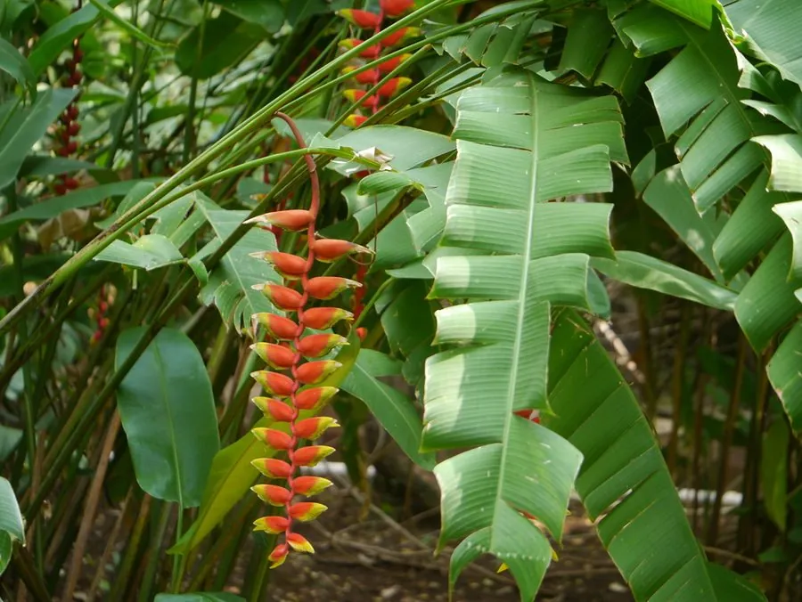

花卉与草本 · 植物界
艳红赫蕉 Heliconia rostrata

赫蕉科赫蕉属多年生草本，花序下垂、苞片鲜红带黄尖，形似倒挂的鸟喙，是热带雨林中最艳丽的观花植物之一。
- 分类
- 门被子植物门纲木兰纲目姜目科赫蕉科属赫蕉属
- 栖息环境
- 热带雨林林下与溪边，喜高温高湿、半阴环境
- 地理分布
- 原产哥斯达黎加至玻利维亚；中国华南、云南南部引种栽培
- 保护级别
- IUCN 暂无评估；野生种群受雨林砍伐影响，栽培较广
物种志
艳红赫蕉为多年生丛生草本，高 2–4 米，具粗壮的根状茎，假茎由叶鞘层层包裹而成。叶片大，长椭圆形至披针形，长 1–2 米，形似芭蕉叶。花序下垂，长 60–100 厘米，苞片鲜红色、先端带黄绿色，二列排列，形似倒挂的鸟喙；真正的花小，黄绿色，藏于苞片内。
本种原产哥斯达黎加至玻利维亚的热带雨林，喜高温高湿、半阴的环境，在中国华南、云南南部常作庭园观花植物。它花序倒垂、红黄相间，是热带雨林中最醒目的植物之一，也是蜂鸟的重要蜜源。艳红赫蕉不耐寒，北方需温室栽培；需充足水分与肥沃土壤，才能抽出大型花序。其花期长，切花插瓶可保持数周。
形态与习性
- 株高2–4 米，丛生，假茎粗壮
- 花期5–10 月，花序下垂
- 花序长 60–100 厘米，苞片鲜红带黄尖
- 光照喜半阴，忌强光暴晒
- 水分喜高湿，需充足浇水与喷雾
- 土壤深厚肥沃、排水良好的壤土
- 主要用途庭园观赏、切花与热带景观
趣味知识
- 艳红赫蕉的花序倒挂生长，红色苞片像一串倒悬的鸟喙。
- 它的苞片鲜红、先端带黄绿色，是热带雨林中最醒目的色彩之一。
- 赫蕉属植物靠蜂鸟传粉，花序结构正好适应蜂鸟的取蜜姿势。
- 艳红赫蕉的切花插瓶可保持数周，是高档花艺的常用材料。